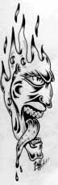

| Significant Commentary
Maxwell-type demons are alive and thriving
 The recent emeritus editorial by Maddox on Maxwell's demon [1] is a short overview of one historical aspect of would-be negentropy, but much greater thought on the subject needs to be given. Indeed, Maxwell's demon is alive and thriving, but just in a different form not requiring a nimble-fingered macroscopic being. We now discuss such experimentally proven demons.Consider the prevailing ansatz that Maxwellian systems outputting more EM energy than the energy input by the operator or experimenter are impossible. Such proposed systems are said to constitute examples of forbidden perpetual motion machines because they violate the second law of classical (equilibrium) thermodynamics. That prevailing ansatz has been falsified in classical electrodynamics since the 1880s, and in particle physics for 45 years, but eerily it is still the prevailing scientific opinion nonetheless. The ansatz can be experimentally disproved in classical electrodynamics as follows: Lay a charged capacitor or electret on a permanent magnet so the E-field of the capacitor or electret is at right angles to the H-field of the magnet. That optimizes S = f(E X H), and hence optimizes the continuous flow of Poynting EM energy from that simple device, even though the fields seem to be "static". As Buchwald states [2], "[Poynting's result] implies that a charged capacitor in a constant magnetic field which is not parallel to the electric field is the seat of energy flows even though all macroscopic phenomena are static." [3] This simple device will freely pour out EM energy indefinitely, so long as it remains intact. We consider a special but universal kind of related Maxwell's demon problem: the vexing problem of the source charge, sometimes called "the most difficult problem in classical and quantum electrodynamics." [4] Any charge pours out observable EM energy continuously in all directions, at the speed of light, with no observable EM energy input. This continuous flow of EM energy establishes the charge's related fields and potentials and their energy, reaching even across the universe for very old charges. In the classical electrodynamics (CED) model and therefore in electrical engineering, there is no solution to this problem because CED does not model nonobservable EM energy inputs such as the virtual particle flux exchange of the charge with its vacuum environment. With no solution available in CED, then the present CED and electrical engineering assume that every charge in the universe freely and continuously creates energy out of nothing, and pours it out in all directions, forming its associated fields and potentials and their energy. Either we must solve the problem in the classical EM model, or totally surrender the conservation of energy law in the model in its present limited form. Or — as is presently the case — we may continue to ignore it, as has been done during the 45 years since the proof of broken symmetry in particle physics [5]. On the other hand, particle physics models and utilizes virtual energy in the seething vacuum, including the interactions of the vacuum with charge. With the 1957 experimental proof of broken symmetry by Wu et al., [5] certified by the award of the Nobel Prize to Lee and Yang later that same year, one of the proven broken symmetries in the vacuum virtual energy exchange is the asymmetry of opposite charges, such as are on the ends of a dipole. For a dipole or dipolarity, then by the very definition of broken symmetry something virtual has become observable. We diverge for a moment, then will return to this proven asymmetry of the opposite charges of the dipole. If we take the modern view of the bare charge clustered by virtual charges of opposite sign, then the magnitude of the bare charge in the middle is infinite (including its energy) and so is the magnitude of the charge of the surrounding clustering virtual charges. [6] So for an "isolated observable charge" we actually have a sort of "infinitely powerful dipole". Yet the difference between these two infinite values of charge is finite; it is routinely calculated as the observed charge of an elementary charged particle, the value that is listed in standard texts and handbooks. The asymmetry of this "opposite composite charges" model of the "isolated observable charge" now explains the long-vexing source charge problem. The observable "composite" charge continuously absorbs virtual photon energy from the seething vacuum exchange, transduces it into observable photon energy excitation, and this excited state continuously decays to emit real observable photons in all directions at the speed of light. When virtual energy input as well as observable energy output is accounted, the charge's proven asymmetry in the vacuum exchange makes the source charge an open system far from equilibrium in its active environment. As an open disequilibrium system the charge is thermodynamically permitted to (1) self-order (hence coherently integrate absorbed virtual photon energy into observable photon energy), (2) self-oscillate or self-rotate (spin), (3) output more energy than the "operator" inputs (the operator inputs none at all), and (4) exhibit negentropy. Every charge in the universe is already doing those four functions. It is also a system having a COP (coefficient of performance, or useful energy output divided by the operator's energy input) of COP = ∞ , since the operator inputs nothing. In short, every charge in the universe already is a special kind of known "Maxwell's demon", whose operational mechanism is long since proven in particle physics but does not appear in classical electrodynamics or electrical engineering. It is a dependable Maxwell's demon, since all charges in the original matter in the universe have been pouring out real EM energy freely, using this asymmetry mechanism, for some 14 billion years, and they continue to do so. Further, any charge one assembles in the laboratory instantly starts up its Maxwellian demon performance automatically, and it will continuously pour out EM energy in all directions indefinitely, so long as the charge remains intact. So this demon is easily created and demonstrated experimentally. The Maxwell's demon for freely extracting copious EM energy from the vacuum is one of the easiest entities to invoke in all of physics. This is not a violation of thermodynamics, since classical equilibrium thermodynamics with its infamous second law does not apply because the charge is far from equilibrium in its exchange with its active vacuum environment. Although the COP = ∞ , the efficiency of the charge system — defined as the useful energy output divided by the total energy input from all sources — is never more than 100%. Hence this is not a perpetual motion machine, and the charge rigorously does not create energy; it only transduces energy input to it in a novel form. In this case, the charge can permissibly act as if it were were a free electrical windmill turning in a novel free electrical wind due to its asymmetry in the vacuum flux. So every charge in the universe exhibits COP = ∞ , clearly proving that Maxwell's demon in an improved form exists and is thriving throughout the universe. There would be no EM fields and potentials and their energy, and hence no electrical circuits or power systems, were it not for this asymmetry of the charge in its virtual energy exchange with the vacuum, making the charge a true Maxwell's demon. In the usual CED model and electrical engineering, the 1867 L. V. Lorenz symmetrical regauging (later credited to H. A. Lorentz) [7] of the equations carefully selects only those Maxwellian systems that have two simultaneous equal and opposite disequilibria with their active environment. This assumes that the potential energy of the system is freely changed twice (by gauge freedom), but only in such highly selected manner as to form two equal and opposite new "free" force fields in the system. These two force fields perform internal work inside the system continuously, increasing its stress (and its stress potential, thereby curving local spacetime). Since there is no net resultant force field, the two force fields are unable to translate electrons in the circuit to do free external work in the external load. So the symmetrically regauged Maxwellian system has been altered: its energy has been changed twice, forming a stress potential inside it and increasing and maintaining that stress on the system, and the frame of the system has been somewhat rotated out of the laboratory frame. The symmetrically regauged Maxwellian system most decidedly is not identical to the system prior to regauging. We note merely that the common Lorentz symmetrical regauging unwittingly assumes two Maxwell's demons of yet different kind, each freely fueled from the local vacuum environment, and each continuously performing internal work upon the system to produce and maintain system stress. Gauge freedom is thus revealed as a special kind of Maxwell's demon, since (1) it assumes that the potential energy of a system can be freely changed at will at any time, and (2) unless we abandon the conservation of energy law, that energy change must have involved energy exchange with the external environment. So the gauge freedom axiom of quantum field theory assumes two specialized Maxwellian demons — i.e., mechanisms for transfer of energy between environment and system, so as to continuously perform internal work upon the system. In this case the two demons are equal and opposite, and fight each other to a draw insofar as performing any useful external work. Oddly, in present electrical circuits the ubiquitous but arbitrary closed current loop circuit — passing all spent current from the external circuit back through the source dipole in the generator against the dipole's back emf — self-imposes Lorentz regauging of excitation discharge in the circuit and prevents COP>1.0 functioning. This is not required by thermodynamics in general! Indeed, several areas are already known to violate present thermodynamics. Sharp discharges (strong gradients), for example, are known to violate it. [8] Other known areas where thermodynamics is violated include rarefied media, and anomalous memory effects in materials. Modern research is being conducted in such areas under the heading of "extended thermodynamics". [9]. Since experiment and not theory is primary in science, let us consider some additional actual Maxwell demon experiments. The well-known "negative resonance absorption of the medium" produces more output energy than the operator inputs to the experiment, with hundreds of these experiments done every year routinely by many nonlinear optical laboratories. As an example, Bohren's version of such an experiment [10] commonly outputs 18 times as much EM energy as the operator inputs, exhibiting COP = 18. Independent replication of Bohren's work by Paul and Fischer [11] is reported in the same journal issue. Added to the charged capacitor lying on a permanent magnet, there thus exist plenty of proven, replicated experiments which can be easily performed to demonstrate a Maxwellian demon operating in a Maxwellian system and freely producing COP>1.0, or even COP = ∞ . Because of the demon (the operational mechanism), these experiments all involve open systems far from equilibrium with their active environment. Hence they are not limited by the second law of classical equilibrium thermodynamics. In short, Maxwell's demon is very much alive in many forms and is thriving after all. It has just been hiding in different form than what is usually suspected. T. E. Bearden, Ph. D.
[2]. Buchwald, Jed Z., From Maxwell to Microphysics (University of Chicago Press, 1985), p. 44. [3]. For a better meanings of "static" as dynamic but steady state, see Tom Van Flandern, Phys. Lett. A, 250 (1998), p. 8-9. [4]. E.g., Sen, D. K., Fields and/or Particles (Academic Press, 1968), p. vii. [5]. Wu, C. S. et al., Phys. Rev., 105, 1957, p. 1413. [6]. Weinberg, Steven, Dreams of a Final Theory (Vintage Books, Random House, 1993), p. 109-110. [7]. Jackson, J. D. and L. B. Okun, Rev. Mod. Phys., 73, 2001, p. 663-680. [8]. Kondepudi, Dilip and Ilya Prigogine, Modern Thermodynamics: From Heat Engines to Dissipative Structures (Wiley, New York, 1998), p. 459. [9]. Jou, D., Extended Irreversible Thermodynamics (Springer-Verlag, 1996). [10]. Bohren, Craig F., Am. J. Phy., 51, Apr. 1983, p. 323-327. Under nonlinear conditions, a particle can absorb and re-emit more energy than is in the light incident on it. Metallic particles at ultraviolet frequencies are one class of such particles and insulating particles at infrared frequencies are another. [11]. H. Paul, H. and R. Fischer, Am. J. Phys., 51, Apr. 1983, p. 327. |